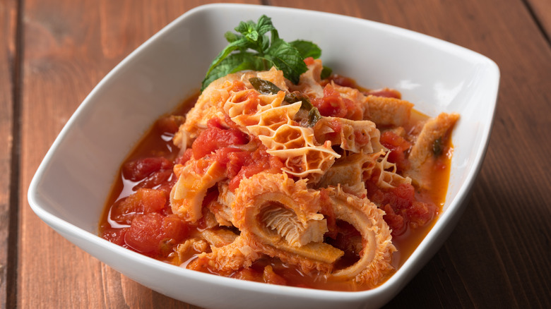

Roman-Style Tripe

Description
If beef tripe is prepared following this method, it has a pleasantly mild but distinct flavor.
When it comes to great sauces for dipping crusty Italian bread, it doesn't get any better than this.
Ingredients
- 2 ½ pounds honeycomb beef tripe
- ½ cup white vinegar
- 2 teaspoons salt
- 1 teaspoon vanilla extract
- 1 large bay leaf
- 1 tablespoon olive oil
- 4 ounces of pancetta bacon, diced
- 1 medium onion, diced
- 6 garlic cloves, minced
- 3 cups marinara sauce
- 1 teaspoon red pepper flakes
- 1, 15 ounce, can of garbanzo beans, drained
- 1 bunch fresh mint leaves, chopped
- salt and ground black pepper
- ¼ cup freshly grated Parmigiano-Reggiano cheese, or to taste
Steps
- Gather all ingredients
- Fill a large stockpot with 5 quarts cold water, tripe, vinegar, 2 teaspoons salt, vanilla, and bay leaf; bring to a boil over high heat. Skim off any foam, then reduce the heat to medium-low, cover, and simmer for 1 1/2 hours.
- Transfer tripe to a plate and set aside to cool. Reserve 2 cups cooking liquid.
- Heat oil in a large skillet over medium heat. Add pancetta and onion; cook and stir until pancetta is browned and onion is translucent, 6 to 7 minutes. Stir in garlic and cook until fragrant, 1 to 2 minutes.
- Stir in marinara sauce, 1 cup cooking liquid, and pepper flakes. Reduce the heat to low and simmer for 30 minutes.
- Cut tripe into 1-inch cubes; add to sauce and stir to combine. Simmer for 30 minutes, adding remaining 1 cup cooking liquid if needed.
- Stir in garbanzo beans and mint, season with salt and pepper, and sprinkle Parmigiano-Reggiano over top.
- Enjoy!